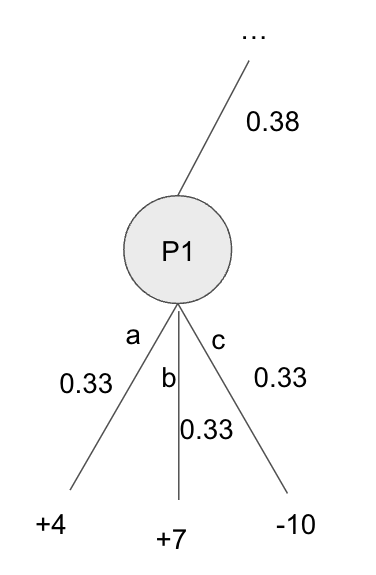

37 CFR Algorithm
37.1 Algorithm Overview
Each information set maintains a strategy and regret tabular counter for each action. These accumulate the sum of all strategies and the sum of all regrets.
In a game like Rock Paper Scissors, there is effectively only one infoset, so only one table for strategy over each action (Rock, Paper, Scissors) and one table for regret over each action (Rock, Paper, Scissors).
Regrets are linked to strategies through a policy called regret matching, which selects strategies proportionally to their positive regrets.
After using regret matching and after many iterations, we can minimize expected regret by using the average strategy at the end, which is the strategy that converges to equilibrium.
If two players were training against each other using regret matching, they would converge to the Nash Equilibrium of \(1/3\) for each action using the average strategy in Rock Paper Scissors.
37.2 Simplified CFR Example: Regret Updates in RPS
Let’s see how that works in Rock Paper Scissors.
In general, we define regret as:
\(\text{Regret} = u(\text{Alternative Strategy}) − u(\text{Current Strategy})\)
We prefer alternative actions with high regret and wish to minimize our overall regret. That second part might sound counterintuitive, but as we play more of the better actions, we will consequently minimize overall regret.
We play Rock and opponent plays Paper \(\implies \text{u(rock,paper)} = -1\)
\(\text{Regret(paper)} = \text{u(paper,paper)} - \text{u(rock,paper)} = 0-(-1) = 1\)
\(\text{Regret(rock)} = \text{u(rock,paper)} - \text{u(rock,paper)} = -1-(-1) = 0\)
\(\text{Regret(scissors)} = \text{u(scissors,paper)} - \text{u(rock,paper)} = 1-(-1) = 2\)
We play Scissors and opponent plays Paper \(\implies \text{u(scissors,paper)} = 1\)
\(\text{Regret(paper)} = \text{u(paper,paper)} - \text{u(scissors,paper)} = 0-1 = -1\)
\(\text{Regret(rock)} = \text{u(rock,paper)} - \text{u(scissors,paper)} = -1-1 = -2\)
\(\text{Regret(scissors)} = \text{u(scissors,paper)} - \text{u(scissors,paper)} = 1-1 = 0\)
We play Paper and opponent plays Paper \(\implies \text{u(paper,paper)} = 0\)
\(\text{Regret(paper)} = \text{u(paper,paper)} - \text{u(paper,paper)} = 0-0 = 0\)
\(\text{Regret(rock)} = \text{u(rock,paper)} - \text{u(paper,paper)} = -1-0 = -1\)
\(\text{Regret(scissors)} = \text{u(scissors,paper)} - \text{u(paper,paper)} = 1-0 = 1\)
To generalize:
- The action played always gets a regret of \(0\) since the “alternative” is really just that same action
- When we play a tying action, the alternative losing action gets a regret of \(-1\) and the alternative winning action gets a regret of \(+1\)
- When we play a winning action, the alternative tying action gets a regret of \(-1\) and the alternative losing action gets a regret of \(-2\)
- When we play a losing action, the alternative winning action gets a regret of \(+2\) and the alternative tying action gets a regret of \(+1\)
After each play, we accumulate regrets for each of the 3 actions.
We decide our strategy probability distribution using regret matching, which means playing a strategy that normalizes over the positive accumulated regrets, i.e. playing in proportion to the positive regrets.
Here’s an example from Marc Lanctot’s CFR Tutorial. Assume that the regret counters start at 0 for each action.
Game 1: Choose Rock and opponent chooses Paper
- Lose 1
- Rock: Regret 0
- Paper: Regret 1
- Scissors: Regret 2
Next Action: Proportional \[ \begin{pmatrix} \text{Rock} & 0/3 = 0 \\ \text{Paper} & 1/3 = 0.333 \\ \text{Scissors} & 2/3 = 0.667 \end{pmatrix} \]
Game 2: Choose Scissors (probability \(2/3\)) and opponent chooses Rock
- Lose 1
- Rock: Regret 1
- Paper: Regret 2
- Scissors: Regret 0
Cumulative regrets:
- Rock: 1
- Paper: 3
- Scissors: 2
Next Action: Proportional \[ \begin{pmatrix} \text{Rock} & 1/6 = 0.167 \\ \text{Paper} & 3/6 = 0.500 \\ \text{Scissors} & 2/6 = 0.333 \end{pmatrix} \]
37.3 Simplified CFR Example: Counterfactual Values

Here we have a very simple game tree showing a Player 1 node at the end of the game. For simplicity, we assume that this is the first iteration of the algorithm so each action is assigned a uniform \(1/3\) probability.
The counterfactual reach probability of information state I, π σ −i (I), is the probability of reaching I with strategy profile σ except that, we treat current player i actions to reach the state as having probability 1. In all situations we refer to as “counterfactual”, one treats the computation as if player i’s strategy was modified to have intentionally played to information set Ii . Put another way, we exclude the probabilities that factually came into player i’s play from the computation.
Regular expected value: We can compute the regular expected value for each action of P1:
\(\mathbb{E}(\text{a}) = 0.33*(4) = 1.33\)
\(\mathbb{E}(\text{b}) = 0.33*(7) = 2.33\)
\(\mathbb{E}(\text{c}) = 0.33*(-10) = -3.33\)
Counterfactual value: The counterfactual value includes the reach probability \(\sigma_(-i) = 0.38\) of the opponent and chance playing to this node.
\[ CV() v_i(I,a) = \pi^\sigma_{-i}(h)\pi^{\sigma:I\rightarrow a}(h,z)u_i(z) v \]
37.4 Core CFR Algorithm
High quantity of definitions (conventions primarily sourced from 2015 paper Solving Heads-up Limit Texas Hold’em):
\(P\): Set of players
\(H\): Game state, represented as history of actions from start of game
Tabular storing strategies and regrets at each infoset
Regrets based on action values compared to node EV, which is based on counterfactual values
Regret minimization, usually regret matching, to get new strategies
Average strategy converges to Nash equilibrium
As we think about solving larger games, we start to look at iterative algorithms.
37.4.1 Regret and Strategies
A strategy at an infoset is a probability distribution over each possible action.
Regret is a measure of how much each strategy at an infoset is preferred and is used as a way to update strategies.
For a given P1 strategy and P2 strategy, a player has regret when they take an action at an infoset that was not the highest-EV action at that infoset.
Regret matching definitions:
- \(a\) is actions
- \(\sigma\) is strategy
- \(t\) is time
- \(i\) is player
- \(R\) is cumulative regret
\[ \sigma_i^t(a) = \begin{cases} \frac{\max(R_i^t(a), 0)}{\sum_{a' \in A} \max(R_i^t(a'), 0)} & \text{if } \sum_{a' \in A} \max(R_i^t(a'), 0) > 0 \\ \frac{1}{|A|} & \text{otherwise} \end{cases} \]
This is showing that we take the cumulative regret for an action divided by the cumulative regrets for all actions (normalizing) and then play that strategy for this action on the next iteration.
If all cumulative regrets are \(\leq 0\) then we use the uniform distribution.
If cumulative regrets are positive, but are are \(<0\) for a specific action, then we use \(0\) for that action.
In code:
def get_strategy(self):
#First find the normalizing sum
normalizing_sum = 0
for a in range(NUM_ACTIONS):
if self.regret_sum[a] > 0:
self.strategy[a] = self.regret_sum[a]
else:
self.strategy[a] = 0
normalizing_sum += self.strategy[a]
#Then normalize each action
for a in range(NUM_ACTIONS):
if normalizing_sum > 0:
self.strategy[a] /= normalizing_sum
else:
self.strategy[a] = 1.0/NUM_ACTIONS
self.strategy_sum[a] += self.strategy[a]
return self.strategy37.4.2 Iterating through the Tree
The core feature of the iterative algorithms is self-play by traversing the game tree over all infosets and tracking the strategies and regrets at each.
From above, we know how to find the strategy and regret in the simple Rock Paper Scissors environment.
In poker:
Strategies are determined the same as above, through regret matching from the previous
regretvalues at the specific information set for each actionCFR definitions:
- \(a\) is actions
- \(I\) is infoset
- \(\sigma\) is strategy
- \(t\) is time
- \(i\) is player
- \(R\) is cumulative regret
- \(z\) is a terminal node
- \(u\) is utility (payoffs)
- \(p\) is the current player who plays at this node
- \(-p\) is the the opponent player and chance
- \(v\) is counterfactual value
Counterfactual values are effectively the value of an information set. They are weighted by the probability of opponent and chance playing to this node (in other words, the probability of playing to this node if this player tried to do so).
Counterfactual value: \(v^\sigma (I) = \sum_{z\in Z_I} \pi^{\sigma}_{-p}(z[I])\pi^{\sigma}(z[I] \rightarrow z)u_p(z)\)
\(\sum_{z\in Z_I}\) is summing over all terminal histories reachable from this node
\(\pi^{\sigma}_{-p}(z[I])\) is the probability of opponents and chance reaching this node
\(\pi^{\sigma}(z[I] \rightarrow z)\) is the probability of playing from this node to terminal history \(z\), i.e. the weight component of the expected value
\(u_p(z)\) is the utility at terminal history \(z\), i.e. the value component of the expected value
Instantaneous regrets are based on action values compared to infoset EV. Each action EV then adds to its
regretcounter:- \(r^t(I,a) = v^{\sigma^t}(I,a) - v^{\sigma^t}(I)\)
Cumulative (counterfactual) regrets are the sum of the individual regrets:
- \(R^T(I,a) = \sum_{t=1}^T r^t(I,a)\)